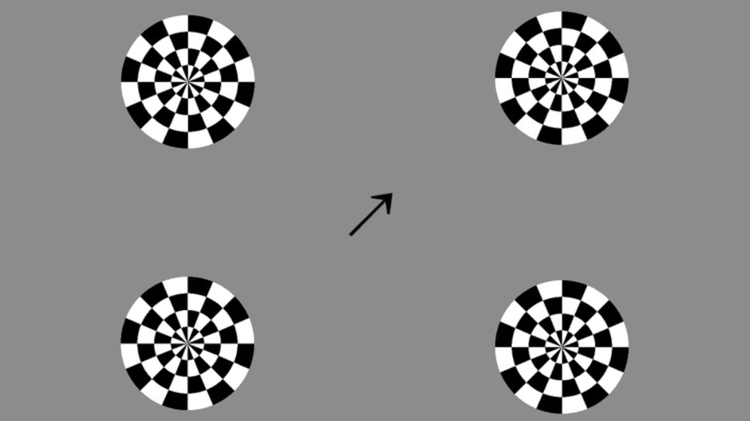
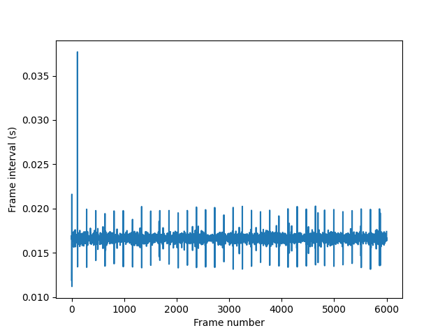
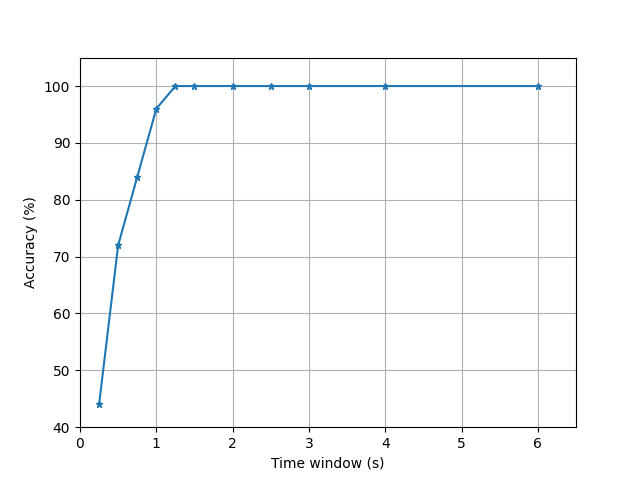
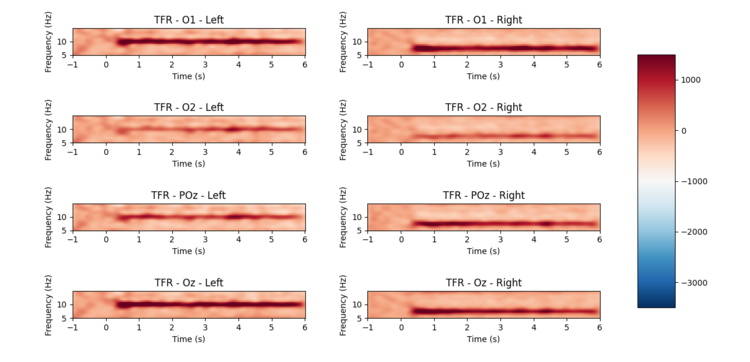

SSVEP Experiments
Steady state visually evoked potentials (SSVEPs) are commonly used in neuroscience and BCI research.
SSVEPs are brain signals that occur in response to a visual stimulus flickering at a fixed frequency, typically 3-75 Hz. A rhythmic stimulus can entrain brain activity in the occipital lobe, which is commonly associated with the visual cortex.
Here, we show you how to use Mentalab Explore with SSVEP-based classification tasks. The code is open-source and available here:
You can run it as is or use it to build your own SSVEP-based applications.
There are two classifiers:
-
A real-time, online SSVEP classifier
-
An offline classifier
In both cases, the classifier determines which stimulus a participant is looking at by analyzing EEG signals. The stimulus whose frequency most closely matches the frequency of EEG signals is considered the target stimulus, and the one the participant is looking at.
Preparation
Software
-
Install
explorepy.Choose Option 2 (Python) if you are installing
explorepyon a Windows system. -
Download the
explorepycode directly from GitHub:To do this, click on the green Code button and then Download ZIP.
Remember where you extract the files. You will need this location later.
-
Activate your Anaconda virtual environment:
conda activate myenv -
Install the required packages:
pip install scikit-learn matplotlib psychopy mne
Hardware
-
Set up the cap and electrodes.
Place EEG electrodes on the occipital visual cortex, for example
Oz,O1,O2,POz, etc.Place the ground electrode on
Fpz, the mastoid, or any other location far enough from the other electrodes.
The analysis presented here is based on this configuration. The channel numbers are hardcoded. If you would like to use a different setup, modify the channel positions in line 70 of the offline_analysis.py file.
-
Run an impedance check to verify that you will produce instructive signals.
For more information on achieving low impedances, see the Lowering Impedance page.
Online SSVEP classifier
-
Navigate to the folder in which you extracted the files in step 2.
There will be a sub-directory called
/examples/ssvep_demo.Move into this path from your Python console:
cd <PATH-TO-SSVEP> -
Turn on the device and run the following command in your terminal.
Replace
##with your device ID, for exampleExplore_1438:python online_ssvep.py --name Explore_#### --duration 100

SSVEP experiment stimuli.
A new browser window will open. In it, four flickering stimuli will display. The stimuli are flickering at the following frequencies:
-
Bottom-left:
12 Hz -
Top-left:
10 Hz -
Bottom-right:
7.5 Hz -
Top-right:
8.6 Hz
Based on the subject’s real-time EEG, the arrow in the center will point to one of the 4 circles. The quicker the arrow points to the target stimulus, the higher the accuracy of the EEG signal.
Once the experiment has run, navigate back to your Python console and press Ctrl+C to exit.
The experiment is set to run for 100 seconds. You can modify this by changing the number after --duration.
Interpret the results

Frame durations for the SSVEP experiment stimuli.
The key takeaway is that the quicker the arrow follows the participant’s focus, the more efficient and accurate the classifier.
All screens have a different refresh rate, which can cause frames to drop, reducing the classifier’s performance. The experiment script auto-generates stimuli by calculating frame duration over experiment time.
In the figure below, longer vertical lines indicate longer frame displays. We can see that one frame dropped early in the experiment, and a few frames displayed longer than others. Overall, however, the classifier was successful.
Offline SSVEP classifier
An offline SSVEP classifier can be used to measure the accuracy of your EEG set-up.
In this experiment, EEG data is recorded while the participant looks at specified target stimuli. An offline analysis of the recorded data is then run to compute system accuracy. Finally, the time-frequency representations (TFR) of the recorded EEG signal are visualized.
To undertake offline SSVEP analysis:
-
Prepare the cap and electrodes as in the online SSVEP experiment.
-
Turn on the device and run the following command in your terminal.
Replace
##with your device ID, for exampleExplore_1438:python offline_experiment.py --name Explore_#### --filename test_rec
The experiment runs 100 trials in 20 blocks of 5. You can change the number of runs by navigating to offline_experiment.py and altering the values assigned to the variables n_blocks and trials_per_block, in lines 16 and 17.
At the beginning of each trial, an arrow will indicate where the participant should look. Shortly after its appearance, a flickering stimulus will appear in the indicated position.
-
Once the experiment is complete, the recorded data can be analyzed.
To do this, run
offline_analysis.py.Ensure you use the same filename here as you did in step 2:
python offline_analysis.py --filename test_rec
Interpret the results

Accuracy over trial duration.
The offline SSVEP experiment will automatically generate two plots.
System accuracy
The first figure indicates that within approximately 0.8 seconds, the system can differentiate between stimulus response signals approximately 90% of the time. After 1 second, the system is 98% accurate. Within 1.2 seconds, it is 100% accurate.
Time-frequency representation

Time-frequency representation for each channel.
In the second plot, we see the time-frequency representations for each channel. These representations clearly show the entrainment of the EEG signal for the two target frequencies.
The left-most plots correspond to the stimulus flickering at 10 Hz, and the right-most plots correspond to the stimulus flickering at 7.5 Hz.
For more information or support, contact support@mentalab.com.